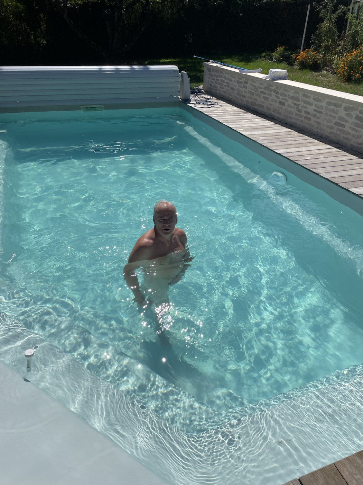
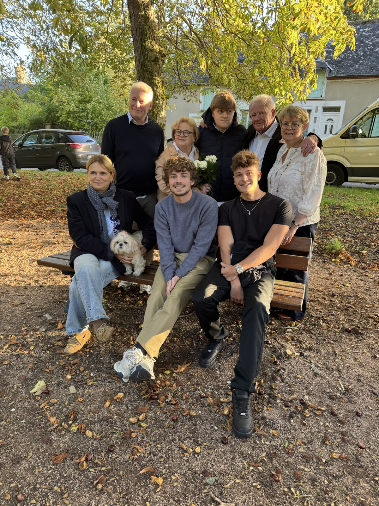
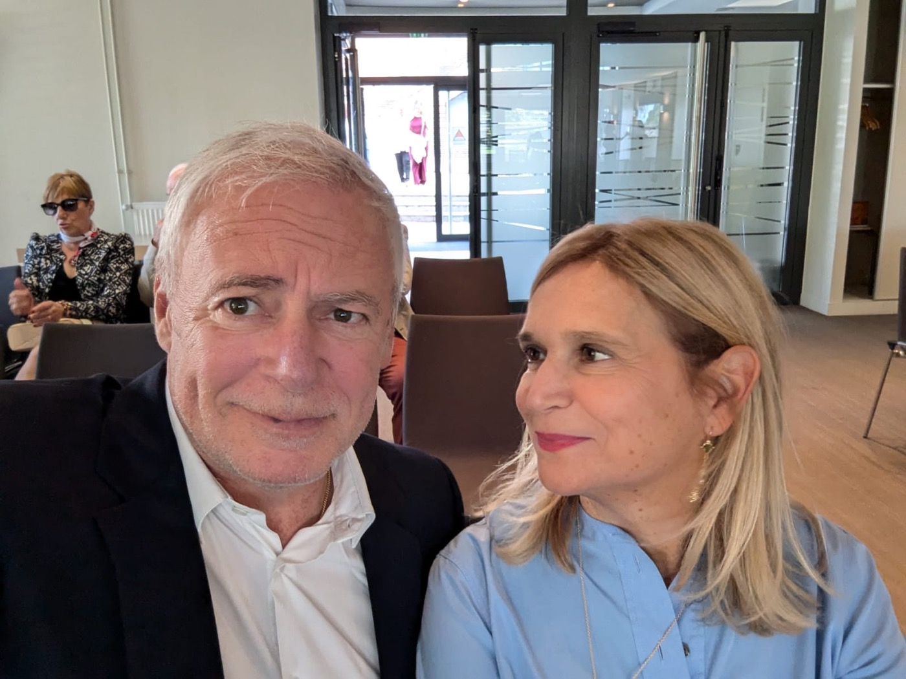

Le grand message
Le premier message de cette page, écrit par ton fils Octave.
Les mots de la famille
Le premier message de cette page, écrit par ton fils Octave.
Quelques mots courts, mais parfaitement sincères.
Un texte direct, fort, très personnel, signé Hippolyte.
Les mots d'Hélène accompagnent maintenant sa photo sur la page.


Message de la famille
Le message d'Hélène
Mon amour

Mon amour,
Aujourd’hui tu as 60 ans… et je ressens surtout une immense gratitude pour l’homme que tu es.
Tu es le père de nos trois merveilleux garçons, et je suis tellement fière de toi. Ensemble, nous avons accueilli Jules en premier, avec sa différence. Cette différence, loin de nous fragiliser, a forgé notre force, notre regard sur la vie et la profondeur de notre famille. Elle nous a appris l’essentiel : l’amour, la patience et la beauté de chaque pas en avant.
Et puis sont arrivés Octave et Hippolyte, la simplicité…
À tes côtés, j’ai découvert un homme profondément bon, un père présent, un guide pour nos garçons et un compagnon de vie exceptionnel où chaque jour passé près de toi est un cadeau de la vie. Ta tendresse, ton courage, ton intelligence et ta manière d’aimer me touchent chaque jour.
Et aujourd’hui, une nouvelle page s’ouvre pour nous. J’espère que cette maison que nous allons rénover ensemble deviendra notre maison du bonheur, un lieu rempli de vie et d’amour, où notre famille continuera de grandir et de se retrouver.
60 ans, c’est une belle histoire déjà écrite… et encore tant de pages à vivre ensemble. J’espère continuer longtemps à marcher à tes côtés.
Joyeux anniversaire mon amour.
Merci pour tout ce que tu es.
Je t’aime ❤️Message de la famille
Le message d'Octave
60 ans
60 ans.
Quand on le dit comme ça, ça paraît énorme. Une vie entière d’expériences, de moments, de décisions, de souvenirs. Mais quand je pense à ces 60 années, je ne vois pas juste un chiffre. Je vois surtout l’homme que tu es.
Et pour moi, avant tout, tu es un exemple.
Un exemple par ta façon d’être avec les autres. Par ta générosité. Par cette manière que tu as toujours eue d’aider, de donner, de rendre service, sans jamais rien attendre en retour. Tu fais les choses parce que tu penses que c’est juste de les faire. Parce que quelqu’un en a besoin. Parce que c’est ta nature.
Et ça, c’est quelque chose qui m’a marqué toute ma vie.
On dit souvent que les enfants apprennent par ce qu’on leur dit. Mais en réalité, on apprend surtout par ce qu’on voit. Et moi j’ai vu un père qui agit, qui aide, qui se rend disponible, qui pense aux autres. Un père qui ne calcule pas, qui ne fait pas les choses pour recevoir quelque chose derrière.
C’est une vraie leçon de vie.
Depuis que je suis petit, tu as toujours été là. Présent, solide, attentif. Quelqu’un sur qui je peux compter, quelqu’un qui avance, qui protège, qui guide.
Tu m’as appris énormément de choses. Le sens du travail. Le fait de se battre pour ce qu’on veut. De ne pas abandonner. D’être droit dans ses valeurs. D’être loyal. Et surtout d’être quelqu’un de bien.
Et puis il y a aussi ta façon d’être comme père.
Doux, attentionné, toujours là quand il faut. Bon… parfois tu gueules aussi, on ne va pas se mentir. Mais même ça, au fond, ça fait partie du personnage. Et avec le recul, je sais très bien que derrière ça il y a toujours la même chose : l’envie que les choses se passent bien pour moi.
Aujourd’hui, en grandissant, je réalise de plus en plus la chance que j’ai.
La chance d’avoir eu un père comme toi.
Et je me fais souvent une réflexion : le jour où j’aurai des enfants, j’aimerais être pour eux le père que tu as été pour moi. Un père présent. Un père attentionné. Un père qui soutient. Un père qui transmet des valeurs. Un père qui protège mais qui laisse aussi grandir.
Si un jour j’arrive à être ne serait-ce qu’une partie du père que tu es, je saurai déjà que je n’ai pas complètement raté ma mission.
Ces derniers mois n’ont pas forcément été les plus simples pour moi, et je crois que tu le sais. Mais même dans ces moments-là, savoir que j’ai une famille solide derrière moi, et un père comme toi, ça donne une force énorme.
Et ça aussi, c’est quelque chose que je n’oublierai jamais.
Alors aujourd’hui, pour tes 60 ans, j’ai juste envie de te dire merci.
Merci pour l’exemple que tu es.
Merci pour tout ce que tu m’as appris.
Merci pour ta présence, ta générosité et tout ce que tu as fait
pour moi depuis toujours.
Je suis fier d’être ton fils. Vraiment.
Et je te souhaite simplement encore énormément d’années remplies de moments heureux, de projets, de rires, et de souvenirs à construire.
Joyeux anniversaire papa.
Et merci d’être toi.Message de la famille
Le message d'Hippo
Daddy doudou
60 ans mon daddy doudou.
Je me souviens encore des histoires que tu nous racontais le soir à Singapour quand tu n’avais même pas passé la cinquantaine. Aujourd’hui ça a bien changé, j’ai grandi, j’ai évolué avec la chance d’avoir un père qui, lui, a toujours su m’épauler tous les jours et qui me donne toujours autant d’amour que quand j’avais 5 ans.
Tu es un père incroyable qui donne toujours sans attendre quoi que ce soit en retour, qui sait toujours comment bien réagir et qui porte énormément notre famille (on le ressent beaucoup quand tu es en déplacement). Je trouve ça extraordinaire que malgré tout ça, la pression du travail et de la vie quotidienne, tu n'as jamais montré un signe de faiblesse envers nous.
Tu restes toujours fort, tu ne lâches jamais rien et j’espère vraiment que j’arriverai à faire de même dans la vie. Même si je ne m’exprime jamais sur des choses comme ça, tu es un vrai exemple pour moi, j’ai déjà beaucoup hérité de ton caractère, qui peut paraître trop sévère par moments d’un point de vue extérieur, mais qui m’a toujours convenu et fait grandir.
J’ai simplement pris exemple sur toi, mis à part peut-être le fait que j’aide moins mes parents que toi, je te l’accorde. Tout ce que je veux dire, c’est que si j’ai pu arriver à qui je suis aujourd’hui, c’est énormément grâce à toi et je t’en remercie.
J’aurais aimé plus m’exprimer mais on m’a averti tard, j’espère que ça te fera plaisir tout de même.
Je t’aime doudou et encore bonne anniversaire !Message de la famille
Le message de Jules
Simple et sincère
Bonne anniversaire je t'aime papa